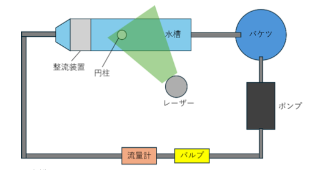
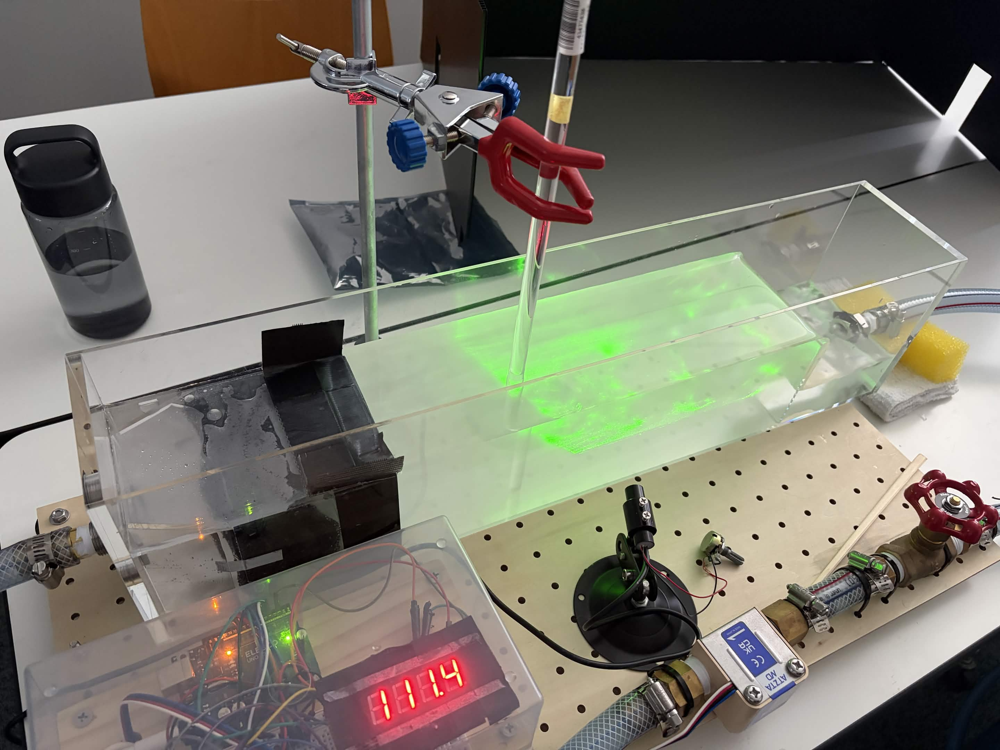
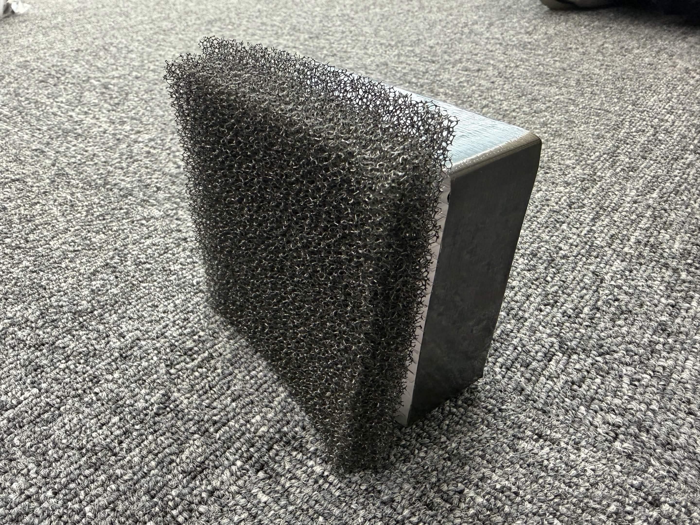
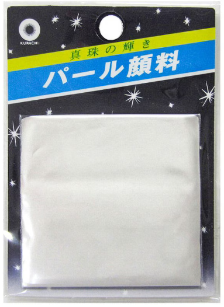
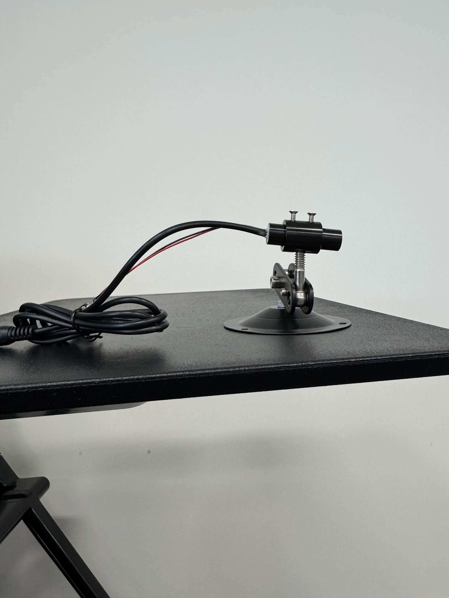
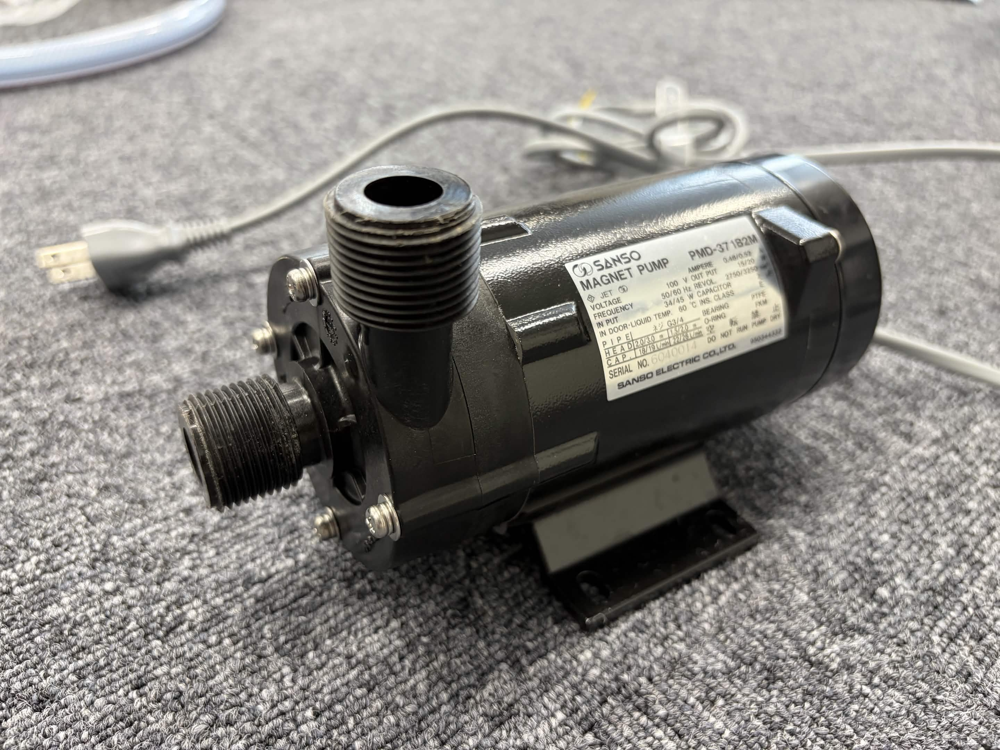
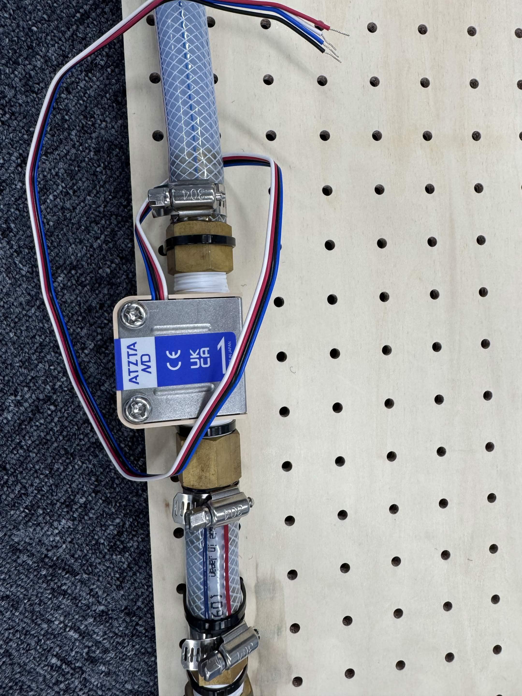
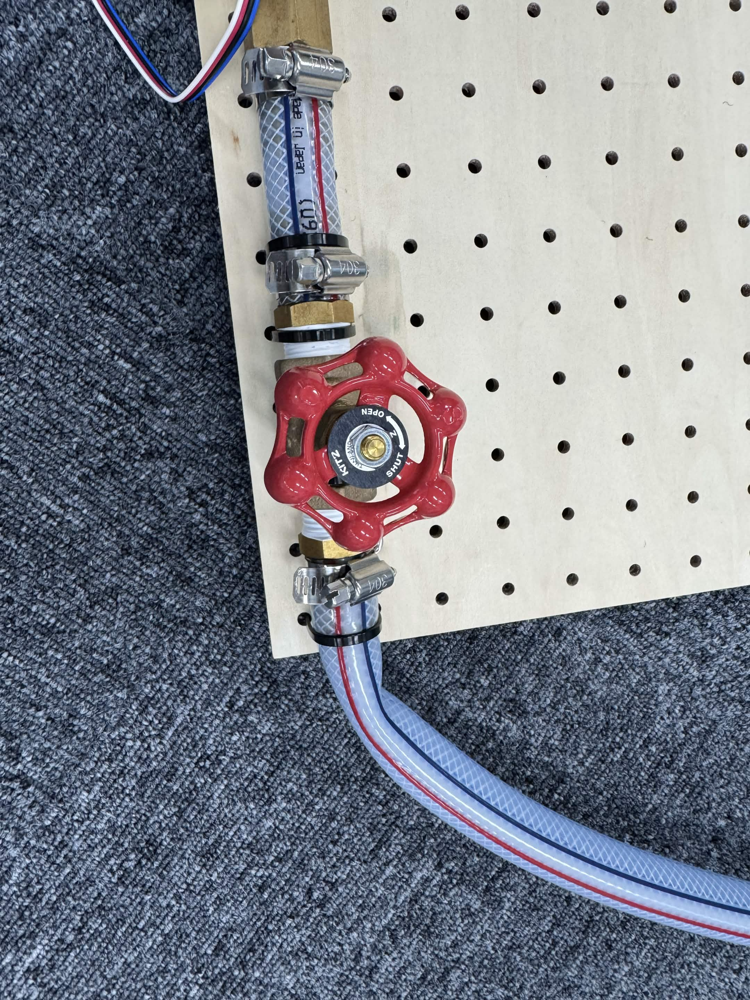

研究ポスター

水の流れの中に円柱を置くと、円柱の表面に沿っていた流れが 途中ではがれる「剥離」が起こります。 剥離した流れは円柱の後ろで不安定になり、 左右の流れが互いに影響し合うことで、 左右交互に渦を放出する周期的な流れが形成されます。 これがカルマン渦です。
カルマン渦の特徴は、渦が左右交互に並ぶことです。 これは偶然ではありません。 円柱の後方では流れが不安定になることで、 左右の渦が交互に放出される規則的な渦列が形成されます。
カルマン渦の発生には レイノルズ数（Re）が関係します。 レイノルズ数は、流れにおける 慣性の影響と粘性の影響の強さを比較する指標です。
また、渦が放出される周期は ストローハル数（St）で表すことができます。 円柱まわりの流れでは、 比較的広いレイノルズ数の範囲で Stはおよそ0.2となります。
渦の発生するレイノルズ数は、 双子渦が約30、層流カルマン渦が30～300、 乱流カルマン渦が300以上とされています。
レイノルズ数 Re とは、 流体の流れにおいて 慣性力と粘性力の比を表す無次元数です。 今回の場合、流速 U、円柱直径 d、 動粘性係数 ν より、次式で表されます。
流体は常温の水なので、 ν = 1.0 × 10-6 m²/s とし、円柱直径 d = 10 mm = 0.01 m を用います。
ここで、Uの単位は[m/s]です。 本装置では、グローブバルブを用いて 流量を変化させることで流速 U を変化させ、 レイノルズ数を調整します。
ストローハル数 St とは、 流れの中での振動や渦の放出などの 周期的現象を表す無次元数です。 流速 U、円柱直径 d、渦の放出周波数 f を用いて、 次式で表されます。
円柱まわりのカルマン渦では、 ストローハル数はおよそ St ≈ 0.2 となります。
今回の実験で使用する円柱 d = 0.01 m の場合、
流速 U が大きくなるほど、 1秒間に放出される渦の数も増加します。
今回の円柱直径が10 mmの場合、
下図に実験装置の全体構成を示します。 ポンプによって水を循環させ、 グローブバルブで流量を調整します。 その後、流量計で流量を確認し、 整流装置によって流れを整えます。 整流された水が円柱を通過することで、 円柱後方にカルマン渦が発生します。 レーザーとパール顔料を用いることで、 発生したカルマン渦を可視化します。

図：カルマン渦実験装置の計画図
本実験では、以下の装置・器具を使用して 水流を発生・調整し、円柱後方に発生する カルマン渦を可視化します。

水を流し、円柱後方に発生するカルマン渦を 観察するための透明な観察部です。 透明な水槽を使用することで、 レーザーによって照らされたパール顔料の動きを 外部から観察することができます。

整流装置には、 モルトフィルターとハニカムボードを使用します。
モルトフィルター： 流れの圧力損失を生じさせ、 流れの速度のばらつきを抑えます。
ハニカムボード： 横方向の流れを抑え、 水をまっすぐ流すことで一様流を形成します。

水槽内に設置し、 水流を遮ることで円柱後方に カルマン渦を発生させます。
円柱の直径はレイノルズ数に関係するため、 実験条件に応じて適切な直径を使用します。

水に少量混ぜて使用する トレーサー粒子です。
パール顔料が水の流れに追従し、 レーザー光を反射することで、 水の流れの形状を目視できるようにします。

水中のパール顔料にレーザー光を照射します。 パール顔料が光を反射することで、 粒子の動きが明るく見えるようになります。
これにより、 円柱後方のカルマン渦の形状と流れの動きを 観察することができます。

実験装置内の水を循環させるために使用します。 ポンプによってバケツから水を送り出し、 水槽を通過した水を再び循環させます。

実験装置内を流れる水の流量を計測します。 得られた流量から流速を求め、 レイノルズ数を計算するために使用します。

バルブ内部の流路断面積を調節することで、 実験装置を流れる水の流量を調節します。
バルブを調整することで流速を変化させ、 レイノルズ数を実験条件に合わせて調整します。
それぞれの装置は、以下のような役割を持って カルマン渦の観察を行います。
実験結果をここに掲載します。
流量・流速・レイノルズ数・
カルマン渦の発生状態などを
実験後に追加してください。